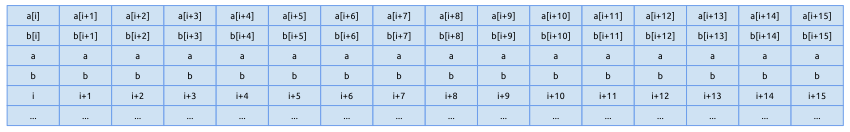
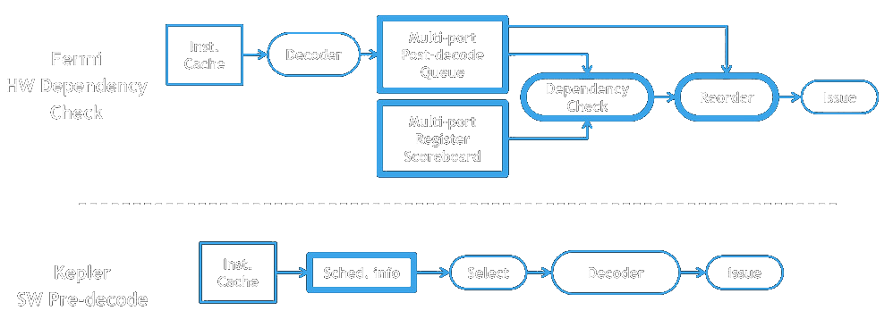

Code GPU with CUDA
NVIDIA GPU Architecture
SIMT
Created by Marina Kolpakova ( cuda.geek ) for Itseez
Back to contents
Outline
- Hardware revisions
- SIMT architecture
- Warp scheduling
- Divergence & convergence
- Predicated & conditional execution
Out of scope
- Computer graphics capabilities
Hardware revisions
SM (shading model) – particular hardware implementation.
| Generation | SM | GPU models |
|---|---|---|
| Tesla | sm_10 | G80 G92(b) G94(b) |
| sm_11 | G86 G84 G98 G96(b) G94(b) G92(b) | |
| sm_12 | GT218 GT216 GT215 | |
| sm_13 | GT200 GT200b | |
| Fermi | sm_20 | GF100 GF110 |
| sm_21 | GF104 GF114 GF116 GF108 GF106 | |
| Kepler | sm_30 | GK104 GK106 GK107 |
| sm_32 | GK20A | |
| sm_35 | GK110 GK208 | |
| sm_37 | GK210 | |
| Maxwell | sm_50 | GM107 GM108 |
| sm_52 | GM204 |
Latency vs Throughput architectures
Modern CPUs and GPUs are both multi-core systems.
- CPUs are latency oriented:
- Pipelining, out-of-order, superscalar
- Caching, on-die memory controllers
- Speculative execution, branch prediction
- Compute cores occupy only a small part of a die
GPUs are throughput oriented:- 100s simple compute cores
- Zero cost scheduling of 1000s or threads
- Compute cores occupy most part of a die
SIMD vs SIMT vs SMT
Single Instruction Multiple Thread
- SIMD: elements of short vectors are processed in parallel. Represents problem as short vectors and processes it vector by vector. Hardware support for wide arithmetic.
- SMT: instructions from several threads are run in parallel. Represents problem as scope of independent tasks and assigns them to different threads. Hardware support for multi-threading.
- SIMT vector processing + light-weight threading:
- Warp is a unit of execution. It performs the same instruction each cycle. Warp is 32-lane wide
- thread scheduling and fast context switching between different warps to minimize stalls
SIMT
depth of Multi-threading × width of SIMD
-
SIMT is abstraction over vector hardware:
- Threads are grouped into warps (32 for NVIDIA)
- A thread in a warp usually called lane
- Vector register file. Registers accessed line by line. A lane loads laneId’s element from register
- Single program counter (PC) for whole warp
- Only a couple of special registers, like PC, can be scalar
-
SIMT HW is responsible for warp scheduling:
- Static for all latest hardware revisions
- Zero overhead on context switching
- Long latency operation score-boarding
SASS ISA
SIMT is like RISC
- Memory instructions are separated from arithmetic
- Arithmetic performed only on registers and immediates
SIMT: Instruction pipeline
Shared fetch/decode, load-store units. Separated compute cores. Area-/power-efficiency thanks to regularity.
- (IF) Select/Fetch one instruction per warp.
- (ID) Decode one instruction per warp.
- (EX) Issue on block of compute cores.
- (WB) Store results to register line.
SIMT: pipeline
- Warp scheduler manages warps, selects & decodes instructions.
- Execution units are SC, SFU, LD/ST, DP
Vector register file
~Zero warp switching requires a big vector register file (RF) - While warp is resident on SM it occupies a portion of RF
- GPU's RF is 32-bit. 64-bit values are stored in register pair
- Fast switching costs register wastage on duplicated items
- Narrow data types are as costly as wide data types.
Size of RF depends on architecture. Fermi: 128 KB per SM, Kepler: 256 KB per SM, Maxwell: 64 KB per scheduler.
Dynamic vs static scheduling
- Static scheduling
- instructions are fetched, executed & completed in compiler-generated order. In-order execution
- in case one instruction stalls, all following stall too
- Dynamic scheduling
- instructions are fetched in compiler-generated order
- instructions are executed out-of-order
- Special unit to track dependencies and reorder instructions
- independent instructions behind a stalled instruction can pass it
Warp scheduling
- GigaThread assign work on Stream Multiprocessor (neXt).
- ... Actually to one of Warp Schedulers
- So, warp can not migrate between schedulers.
- Depending on generation scheduling is dynamic (Fermi) or static (Kepler) 
- Anyway register scoreboarding for long lasting operations.
- Warp has own lines in register file, PC, activity mask
Warp scheduling (cont)
 Modern warp schedulers support dual issue (sm_21+). They decode 2
instructions per warp per clock. Kepler relies on ILP.
Modern warp schedulers support dual issue (sm_21+). They decode 2
instructions per warp per clock. Kepler relies on ILP.
The number of warp schedulers is 2 to 4 and depends on arch.
Warps belong to blocks. Hardware tracks this as well.
Divergence & (re)convergence
Divergence: not all lanes in a warp take the same code path
- Convergence handled via convergence stack
- Convergence stack entry includes
- convergence PC
- next-path PC
- lane mask (mark active lanes on that path)
- SSY instruction pushes convergence stack. It occurs before potentially divergent instructions
- <INSTR>.S indicates convergence point – instruction after which all lanes in a warp take the same code path
Divergent code example
(void) atomicAdd( &smem[0], src[threadIdx.x] ); /*0050*/ SSY 0x80;
/*0058*/ LDSLK P0, R3, [RZ];
/*0060*/ @P0 IADD R3, R3, R0;
/*0068*/ @P0 STSUL [RZ], R3;
/*0070*/ @!P0 BRA 0x58;
/*0078*/ NOP.S;Assume warp size == 4

Predicated & Conditional execution
- Predicated execution
- Frequently used for if-then statements, rarely for if-then-else. Decision is made by compiler heuristic.
- Optimizes divergence overhead.
- Conditional execution
- Compare instruction sets condition code (CC) registers.
- CC is 4-bit state vector (sign, carry, zero, overflow)
IMAD R8.CC, R0, 0x4, R3; - No WB stage for CC-marked registers